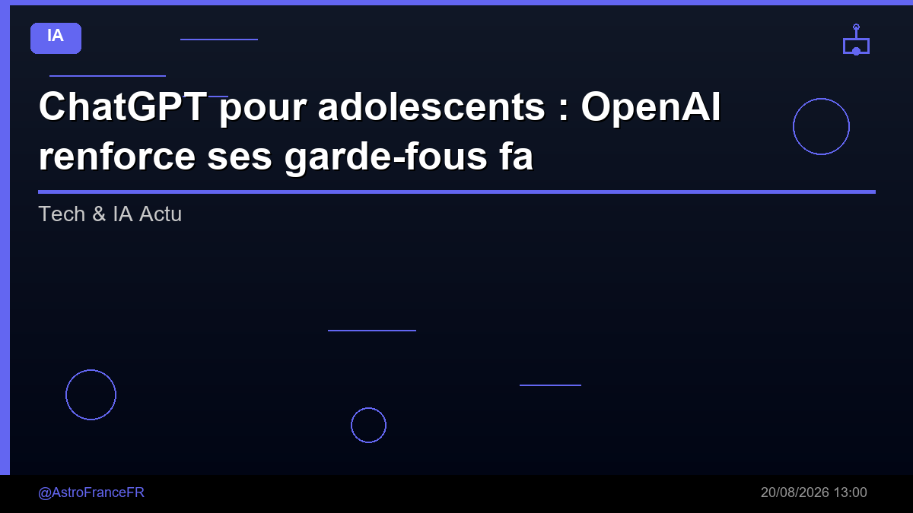

ChatGPT pour adolescents : OpenAI renforce ses garde-fous face aux risques de dépendance à l'IA - ladepeche.fr

🛒 En lien avec cet article
Publicité — Liens de partenariat Amazon : une commission peut être reversée, sans surcoût pour vous.
🔥 Top produits tech du moment
Publicité — Liens de partenariat Amazon : une commission peut être reversée, sans surcoût pour vous.
L'intelligence artificielle continue de transformer en profondeur notre quotidien et l'économie. Cette annonce s'inscrit dans une dynamique où les grands acteurs accélèrent leurs investissements et leurs lancements.
Ce qu'il faut retenir
ChatGPT pour adolescents : OpenAI renforce ses garde-fous face aux risques de dépendance à l'IA ladepeche.fr
Pourquoi c'est important
Cette information marque une nouvelle étape dans le développement de l'intelligence artificielle. Elle concerne directement les utilisateurs de technologies numériques et mérite d'être suivie de près dans les prochaines semaines. ChatGPT pour adolescents : OpenAI renforce ses garde-fous face aux risques de dépendance à l'IA - ladepeche.fr est ainsi un signal à prendre en compte pour comprendre les évolutions du secteur.
En résumé
Retenez l'essentiel : ChatGPT pour adolescents : OpenAI renforce ses garde-fous face aux risques de dépendance à l'IA - ladepeche.fr. Cette actualité a été rapportée par Google News IA. Nous continuerons de suivre ce sujet et de vous tenir informés des prochaines évolutions.
🚀 Vous êtes freelance tech ?
Calculez votre TJM en 30 secondes : micro-entreprise, SASU, EURL ou portage salarial. Gratuit, taux 2025.
Calculer mon TJM →Source : Google News IA